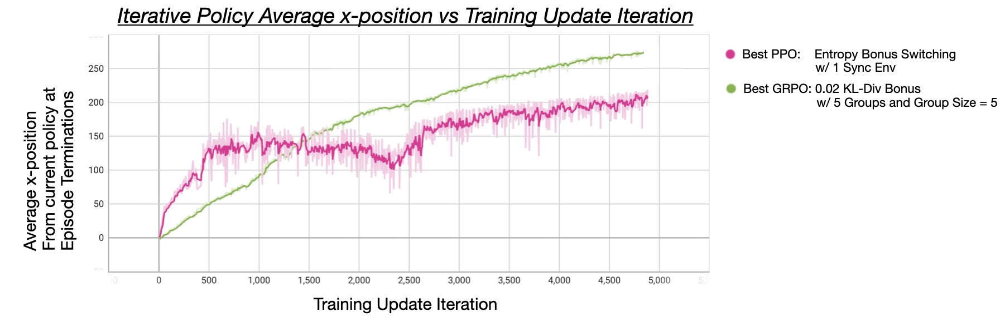

Fig. 2: DeepSeek's GRPO with custom Terminal Reward Modelling and KL-Divergence bonus (green)
achieves superior final performance vs OpenAI's PPO with custom Entropy Bonus Switching (magenta).
See Results and Findings for details on experiments conducted.
Fig. 3: Early training iterations demonstrating uncoordinated movement;
the network still has learning to do from on-policy data collection!
Fig. 4: Best PPO (left, magenta in Fig. 2) versus Best GRPO (right, green in Fig. 2).
GRPO demonstrates more stable learning and superior performance, as discussed in Results and Findings.
In this project, I implemented and compared two on-policy reinforcement learning algorithms: Proximal Policy Optimization (PPO)[from OpenAI Schulman et al., 2017]
and Group Relative Policy Optimization (GRPO)[from DeepSeek Zheng et al., 2024] to
train agents to control a HalfCheetah robot in OpenAI's Gymnasium environment.
The HalfCheetah environment presents a challenging continuous control problem where an agent must learn to coordinate 6 joints to propel a
two-dimensional cheetah forward as fast as possible: the agent is rewarded proportional to its forward velocity every timestep (every frame) and is
encouraged to maximize this reward in every state.
The agent receives observations including joint angles, velocities, and position information, and must output continuous torque values for each joint.
Both algorithms use actor-critic architectures and modeling continuous action spaces using Gaussian policy distributions (which lends itself nicely
to the probabilistic formulations of both algorithms).
The key difference lies in their advantage estimation approaches:
PPO uses Generalized Advantage Estimation (GAE) with temporal difference learning to estimate advantages
GRPO uses Group-Relative Advantage Estimation, comparing trajectory rewards within groups of parallel episodes
After implementing both algorithms, I explore how different advantage estimation methods affect learning efficiency and final performance in locomotion.
The PPO implementation follows the standard actor-critic architecture with the following key components:
Network Architecture
Both policy network (actor network) and value network (critic network) use identical architectures with three hidden layers (128→128→64 units) and GELU activations.
The policy network creates a Gaussian distribution policy from which actions can be sampled: $a_t \sim \mathcal{N}(\mu_\theta(s_t), \sigma_\theta)$;
the policy network learns the mean of a Gaussian distribution policy unique to each joint, whereas the standard deviation of the Gaussian distribution policy
is resolved from a learned embedding table which is shared across the action space dimension (shared across all joints).
The value network outputs a single value estimate (the expected cumulative reward of the current state, when following the existing policy's recommendation for all future actions).
Experience Collection
The implementation uses parallel vectorized environments to collect experience efficiently.
Each policy update collects 2048 steps per environment. Episodes run for exactly 1000 steps, with environments automatically resetting upon completion.
During experience collection, the actor network is sampled without gradients (to prevent memory accumulation and ensure efficient rollout).
For each observation, the actor network outputs mean values for the Gaussian policy distribution, which are combined with the learned
log-standard deviation to sample actions: $a_t \sim \mathcal{N}(\mu_\theta(s_t), \sigma_\theta)$.
The complete experience tuple $(s_t, a_t, \log \pi(a_t|s_t), r_t, V(s_t))$ is stored in memory buffers. Once experience collection has
concluded, advantages $A_t$ and ground truth targets for value estimation $Q(s_t, a_t)$ are computed.
This aggregate experience forms the dataset for policy updates.
Advantage Estimation
PPO uses Generalized Advantage Estimation (GAE) with $\gamma = 0.99$ and $\lambda = 0.95$. Advantages are computed by bootstrapping from value estimates:
$$A_t = \sum_{l=0}^{\infty} (\gamma \lambda)^l \delta_{t+l}$$
where $\delta_t = r_t + \gamma V(s_{t+1}) - V(s_t)$ is the temporal difference error.
Policy Updates and Co-Optimization
The collected experience is divided into 32 minibatches. For each policy update (using one set of on-policy experience collection),
the policy and value networks are co-optimized for 10 epochs: both networks are trained simultaneously using a combined loss function.
PPO collects up to 6144 total data points (3 environments X 2048 steps) for a single policy update, such that each minibatch has
size of 192 datapoints.
The critic network learns to better estimate state values, which in turn provides more accurate advantage estimates for the actor network.
This creates a feedback loop: better value estimates lead to better advantage estimates, which lead to better policy updates,
which generate better data for training the value function.
Incremental (stable) updates are encouraged with PPO clipping coefficient set to 0.2.
Additionally, gradients are rescaled in-place so that the total norm of the gradients across all parameters does not exceed 0.5.
To balance exploration and exploitation throughout training, some experiments set the entropy coefficient for the first half of training (encouraging exploration)
and then reduced entropy later as training matures (focusing on exploitation of learned behaviors without interfering with policy convergence).
GRPO Implementation Summary
The GRPO implementation modifies the standard PPO approach by using group-relative advantage estimation instead of GAE:
Network Architecture
The policy network (actor network) architecture is identical to PPO. However, there is no need for a value network (critic network), as GRPO does not
rely on value function bootstrapping for advantage estimation and instead estimates advantages through direct comparison of rewards in each group.
The trade-off is higher variance in advantage estimates (since we don't bootstrap) but potentially more accurate estimates
(since we use actual returns rather than value function approximations).
Experience Collection
GRPO uses 5 groups of 5 parallel vectorized environments each (25 total environments).
Each environment within a group starts from the same initial state to ensure fair sampling within groups (whereas each group is guaranteed to have a different starting
seed to diversify experience collection). Each policy update collects 1000 steps per environment. The environments are reset at the beginning of each policy update,
such that each environment within a group has the same identical initial conditions and allows for meaningful comparison of trajectory outcomes within each group.
Similar to PPO, the actor network is sampled without gradients during experience collection to maintain computational efficiency.
For each observation across all 25 environments, actions are sampled from the Gaussian policy: $a_t \sim \mathcal{N}(\mu_\theta(s_t), \sigma_\theta)$.
However, unlike PPO, GRPO only stores the experience tuple $(s_t, a_t, \log \pi(a_t|s_t), r_t)$ - notably excluding value estimates since no critic network is used.
Group-Relative Advantage Estimation
In GRPO, rewards are assumed to be terminal: the reward to a question in training is how well the question was answered. However, in robotics environments, rewards are not terminal,
as the state of a robot sets it up for future rewards (or lack thereof), which is why PPO uses a value function $V(s_t)$ to estimate the value of being in a state when calculating
advantages.
To adapt GRPO's terminal rewards assumption to robotics, I let each "question" (task) to be a multi-step robot trajectory, and employ aggregate multi-step rewards to model a
terminal GRPO reward. I use discounted rewards modelling early in training (to encourage strong initial learning of early states), and then switch to
uniform reward weighting to encourage the agent to succeed in later frames of episodes instead of favoring early frames more.
For group $g \in G$, environment $i \in N$ associated with $g$, and $T$ timesteps in the multi-step robot trajectory, the aggregate return is computed as:
$$R_{g,i} = \begin{cases}
\frac{1}{T}\sum_{t=0}^{T-1} \gamma^t r_{g,i,t} & \text{if early training} \\
\frac{1}{T}\sum_{t=0}^{T-1} r_{g,i,t} & \text{otherwise (late training)}
\end{cases}$$
Now that there is a "terminal" reward calculated for each $(g,i)$, within each group $g$, advantages are computed by normalizing returns and broadcasting to
each individual timestep, such that each timestep is equally responsible for the advantage of the
trajectory taken compared to other trajectories of the group.
$$A_{g,i} = \frac{R_{g,i} - \mu_g}{\sigma_g + \epsilon}$$
$$A_{g,i,t} = \frac{A_{g,i}}{T}$$
where
$\mu_g = \frac{1}{N}\sum_{j=1}^N R_{g,j}$ is the mean return within group $g$
$\sigma_g = \sqrt{\frac{1}{N}\sum_{j=1}^N (R_{g,j} - \mu_g)^2}$ is the standard deviation within group $g$
Policy Updates
The collected experience is divided into 5 grouped minibatches. For each policy update (using one set of on-policy experience collection), the policy network is
optimized for 10 epochs.
Incremental (stable) updates are encouraged with PPO clipping coefficient set to 0.2. Additionally,
gradients are rescaled in-place so that the total norm of the gradients across all parameters does not exceed 0.5.
GRPO uses a different batching structure than PPO due to its group-based approach: while PPO collects up to 6144 total data points (3 environments X 2048 steps) for a single policy update,
GRPO is much more data hungry: it collects 1000 steps per environment X 5 environments per group X 5 different groups = 25000 total data points for a single policy update.
Each minibatch contains 200 timesteps from each group, but since there are 5 environments per group, the true minibatch size becomes 1000 data points (200 X 5 environments).
Random timestep indices are sampled from each group to construct minibatches, ensuring that each group is equally sampled to have a fair policy network performance estimation.
Results and Findings
PPO Experiment 1: Entropy Coefficient Impact on Learning Performance
This experiment demonstrates the critical role of entropy bonuses in PPO training. The baseline PPO without entropy bonus (gray) shows limited exploration,
with the actor policy plateauing around obtaining an average position of ~110 by the end of training episodes.
Adding a constant 0.04 entropy bonus (cyan) demonstrates much faster learning by incentivizing exploration, with the policy network learning to travel faster/further in early training update iterations
(reaching a high score of ~170). However, the same entropy later interferes with policy convergence, with the policy ultimately converging to the same gray baseline PPO.
The most successful approach is a hybrid: entropy bonus switching (magenta) starts with 0.04 entropy for exploration during the first half of training (overlapping with cyan),
then reduces to 0 for exploitation in the second half. This achieves the highest performance (with the actor policy reaching an average episodic distance travelled of ~230) by balancing exploration
and exploitation phases.
The impact of entropy switching is demonstrated below:
The baseline PPO without entropy bonus (gray) shows naturally decreasing entropy as the policy becomes more deterministic,
eventually reaching negative values (indicating an overly confident / potentially suboptimal policy).
The constant entropy bonus (cyan) demonstrates continued exploration across training updates
(but potentially preventing convergence to optimal actions).
The entropy switching approach (magenta) demonstrates the best behavior: it maintains substantial entropy (~55) during the exploration phase,
then once the bonus is removed, entropy stays fairly constant (allowing for policy refinement, although interestingly enough not decreasing entropy throughout this refinement).
PPO Experiment 2: Data Scale Impact on Learning Performance
This experiment investigates how the number of parallel synchronous environments used to collect data affects PPO learning stability and performance.
The entropy switching approach from above is applied to each run (as it had the best performance).
The comparison reveals that using a single synchronized environment provides a clearer training signal compared to runs with multiple synchronized environments. By using 3 synchronized environments, each minibatch has 3 times more datapoints,
which could stabilize PPO policy and value network updates. However, this did not appear to have a notable impact on the HalfCheetah's locomotive capacity, while significantly increasing the computational burden of data collection and processing.
Note that in both of these runs, the environment is not reset at the beginning of a training update (i.e., put in a stationary upright position). This means that after 2048 steps (the length of
on-policy data collected), the environment(s) will be in an intermediate state at the start of the next policy update (which isn't the best starting state, but can be viewed as
a regularization term on the training process and perhaps encourage better recovery from HalfCheetah).
Therefore, the final run in this experiment forcibly reset the synchronized environments, putting the HalfCheetahs in a new stable state at the start of each training update. However,
this also did not have much of an impact compared to the performance of a single synchronized environment.
This demonstrates that PPO does not benefit from having many parallel data collection environments in the same way that GRPO does (as witnessed in the next experiment). In this sense,
GRPO is more data-hungry than PPO for robotics on-policy data collection.
GRPO Experiment 1: Small Scale Hyperparameter Search
This analysis explores various single-group GRPO configurations to understand the impact of different hyperparameters and reward calculation methods.
While GRPO is intended to work with multiple groups, single-group runs helped inform me which hyperparameters to run at a larger scale.
The baseline single-group GRPO (yellow) shows modest performance.
Adding KL-divergence regularization (purple) provides some improvement in learning stability but does not impact performance significantly.
Adding a small entropy bonus (green) shows minimal impact and hurts the baseline performance, suggesting that GRPO's group-relative advantage estimation provides sufficient exploration incentive.
Finally, as discussed in GRPO Implementation Summary, switching the terminal reward modelling approach from a discounted reward
(encouraging stability in early frames in early training for good initial learning) to an average reward halfway through training (encouraging equal weighting to all frames as training matures
and coaxing better performance) confirms that emphasizing early timesteps in trajectory evaluation helps the agent learn fundamental locomotion skills before optimizing for long-term performance.
GRPO Experiment 2: KL-Divergence Regularization Impact on Learning Performance
As indicated by the previous experiment, the ideal multi-group GRPO setup should involve Mixed Terminal Reward Modelling, with some amount of KL-Divergence regularization.
As demonstrated by all runs, multi-group GRPO demonstrates much faster learning compared to single-group GRPO, as
group-relative advantages become more informative when computed across diverse trajectories (a more diverse dataset).
The baseline 5-group GRPO (with 5 parallel synchronized environments per group) actor network reaches an episodic average position of ~150.
Meanwhile, adding KL-divergence regularization provides incremental improvements. The 0.02 KL-divergence bonus (green) emerges as the optimal configuration,
reaching an episodic average position of ~250, while the 0.01 and 0.04 KL-divergence bonus demonstrate slower learning and are in line with the PPO performance, but with less stable learning.
Best PPO vs Best GRPO
The following compares the best PPO model and best GRPO from experiments above:
PPO with entropy bonus switching (magenta) demonstrates faster initial learning than GRPO, but then demonstrates slower growth. Meanwhile, GRPO with Mixed Terminal Reward Modelling
and a 0.02 KL-divergence bonus (green) demonstrates slower initial learning,
but continues to make policy updates which steadily improve the actor network's ability to make the HalfCheetah perform incrementally better.
Ultimately, the PPO HalfCheetah reaches an average episodic distance of ~200, whereas the GRPO HalfCheetah reaches an average episodic distance of ~250. It appears that
both PPO and GRPO have room to achieve a higher average episodic distance, although GRPO might have relatively more growth potential (given that its performance seems to plateau less than PPO).
Along with GRPO's better performance achieved in the set number of training updates, we see that there is a very notable difference in the actor network stability
across synchronized environments and groups, with the GRPO actor network being significantly more consistent in its performance. This variance between PPO and GRPO is shown below:
PPO (magenta) exhibits extremely high variance throughout training, indicating significant instability in learning dynamics. This high variance likely stems from the interaction
from the GAE bootstrapping and the co-optimization of policy and value networks: if the value function is not good at approximating the value of a given state, then
the resulting advantages may not be aligned with the true advantage of taking an action in a given state, which can lead to high variance in the policy network's sampled actions.
On the other hand, the sustained improvement of GRPO (green) throughout training suggests that its
trajectory-based advantage estimation scales better with extended training, possibly due to reduced bias from value function approximation errors:
by eliminating a value network altogether and using group-relative advantage estimation seems to avoid approximation errors and provides more consistent learning signals.
A concurrent driver for PPO's greater instability is the much higher entropy of its actor network's probability distribution compared to that of GRPO:
As seen in early PPO experiments, an entropy bonus was crucial to encourage early exploration and helped the agent break past its average score of ~100 for baseline PPO with no entropy.
While PPO used entropy bonus switching to allow for policy refinement, the PPO total objective does not encourage the entropy to decrease: the actor network is able to find
sufficient rewards from the entropy it reached before the entropy bonus was removed, such that it is not incentivized to decrease entropy even though this may lead to more stable
performance overall. More stable performance could potentially be encouraged by having a negative entropy bonus in later training and seeing if that reduces the policy variance within each training update.
On the other hand, GRPO (green) maintains consistently low entropy throughout training, suggesting that its group-relative advantage estimation naturally provides
sufficient exploration incentives without requiring explicit entropy bonuses. The low entropy indicates that GRPO develops more confident, deterministic policies while still achieving
superior performance, likely because the group-based comparisons inherently encourage exploration of diverse strategies within each group.
This finding suggests that GRPO's group structure may be a more efficient exploration mechanism than explicit entropy regularization.
A side-by-side synchronized comparison of PPO (left) and GRPO (right) performance in the first 12 seconds of terminal training stages is shown below:
On-Policy Reinforcement Learning Theory
Both PPO and GRPO are on-policy algorithms that directly optimize a policy $\pi_\theta(a|s)$ to maximize expected
cumulative rewards. The core challenge in policy gradient methods is estimating the advantage function $A^\pi(s,a)$, which
measures how much better an action is compared to the average action in a given state.
Importance Sampling
Both algorithms use importance sampling to reuse data across multiple policy updates:
$$\mathbb{E}_{\pi_{\theta_{old}}}[\frac{\pi_\theta(a|s)}{\pi_{\theta_{old}}(a|s)} A^{\pi_{\theta_{old}}}(s,a)]$$
The ratio $\frac{\pi_\theta(a|s)}{\pi_{\theta_{old}}(a|s)}$ weights the old data according to the new policy, but can cause high variance when policies diverge significantly.
Proximal Policy Optimization (PPO) Theory
PPO [Schulman et al., 2017] addresses the
instability of importance sampling by clipping the policy ratio to prevent overly large policy updates.
Total Loss Function
The complete PPO loss function (for gradient descent) combines three components:
$$L^{PPO}(\theta) = -L^{CLIP}(\theta) + c_1 L^{VF}(\theta) - c_2 L^{S}(\theta)$$
where:
$L^{CLIP}(\theta) = \mathbb{E}_t[\min(r_t(\theta)A_t, \text{clip}(r_t(\theta), 1-\epsilon, 1+\epsilon)A_t)]$ is the clipped policy objective
$L^{VF}(\theta) = \mathbb{E}_t[(V_\theta(s_t) - V_t^{target})^2]$ is the value function loss
$L^{S}(\theta) = \mathbb{E}_t[S[\pi_\theta](s_t)]$ is the entropy bonus
$c_1 = 0.2$ and $c_2 = 0.04$ are loss coefficients
Clipped Objective
The PPO objective function is:
$$L^{CLIP}(\theta) = \mathbb{E}_t[\min(r_t(\theta)A_t, \text{clip}(r_t(\theta), 1-\epsilon, 1+\epsilon)A_t)]$$
where $r_t(\theta) = \frac{\pi_\theta(a_t|s_t)}{\pi_{\theta_{old}}(a_t|s_t)}$ is the importance sampling ratio and $\epsilon$ is the clipping parameter (typically 0.2).
Advantage Estimation
PPO uses Generalized Advantage Estimation (GAE) to balance bias and variance in advantage estimates:
$$A_t^{GAE(\gamma,\lambda)} = \sum_{l=0}^{\infty} (\gamma \lambda)^l \delta_{t+l}$$
where $\delta_t = r_t + \gamma V(s_{t+1}) - V(s_t)$ is the temporal difference error. A small $\gamma \lambda \approx 0$ gives high bias to the current timestep but low variance,
while a larger $\gamma \lambda \approx 1$ gives low bias but high variance.
Value Function Loss
The value function loss trains the critic to accurately predict discounted future rewards:
$$L^{VF}(\theta) = \mathbb{E}_t[(V_\theta(s_t) - V_t^{target})^2]$$
where $V_t^{target} = A_t + V(s_t)$ are the GAE-computed returns. Intuition: This term ensures the critic network
learns to estimate how good each state is, providing better baselines for advantage computation. Without accurate value estimates,
the advantage estimates would be noisy, leading to unstable policy updates.
Entropy Loss
The entropy bonus encourages exploration by penalizing overly deterministic policies:
$$L^{S}(\theta) = \mathbb{E}_t[S[\pi_\theta](s_t)] = \mathbb{E}_t[-\sum_a \pi_\theta(a|s_t) \log \pi_\theta(a|s_t)]$$
Intuition: Higher entropy means the policy maintains uncertainty and continues exploring different actions.
Without this term, the policy might converge prematurely to a suboptimal deterministic strategy. The entropy bonus is
typically reduced or eliminated later in training when exploitation becomes more important than exploration.
This creates a natural progression from exploration-focused learning (where the agent discovers diverse behaviors) to
exploitation-focused learning (where the agent refines and commits to the most promising strategies), while preventing
the entropy bonus from interfering with policy convergence in later stages of training.
Group Relative Policy Optimization (GRPO) Theory
GRPO [Zheng et al., 2024] takes a different approach to advantage
estimation by comparing trajectory outcomes within groups rather than using temporal difference learning.
Group-Based Advantage Estimation
Instead of bootstrapping from value estimates, GRPO computes advantages by comparing complete trajectory returns within groups:
For each group $g$ containing $N$ trajectories with returns $R_{g,1}, R_{g,2}, \ldots, R_{g,N}$:
$$A_{g,i} = \frac{R_{g,i} - \mu_g}{\sigma_g + \epsilon}$$
where:
$\mu_g = \frac{1}{N}\sum_{j=1}^N R_{g,j}$ is the mean return within group $g$
$\sigma_g = \sqrt{\frac{1}{N}\sum_{j=1}^N (R_{g,j} - \mu_g)^2}$ is the standard deviation within group $g$
Trajectory Return Calculation
The trajectory return can be computed using different schemes:
Discounted return: $R = \frac{1}{T} \sum_{t=0}^T \gamma^t r_t$ (used early in training)
Average return: $R = \frac{1}{T} \sum_{t=0}^T r_t$ (used later in training)
Total Loss Function
The GRPO loss function is simpler than PPO since it doesn't require a value function. The loss function (for gradient descent) is given by:
$$L^{GRPO}(\theta) = -L^{CLIP}(\theta) - c_2 L^{S}(\theta) + c_3 L^{KL}(\theta)$$
where:
$L^{CLIP}(\theta) = \mathbb{E}_{g,t}[\min(r_{g,t}(\theta)A_{g,t}, \text{clip}(r_{g,t}(\theta), 1-\epsilon, 1+\epsilon)A_{g,t})]$ is the clipped policy objective with group-relative advantages
$L^{S}(\theta) = \mathbb{E}_{g,t}[S[\pi_\theta](s_{g,t})]$ is the entropy bonus
$L^{KL}(\theta) = \mathbb{E}_{g,t}[D_{KL}(\pi_{\theta_{old}}(\cdot|s_{g,t}) || \pi_\theta(\cdot|s_{g,t}))]$ is the KL divergence regularization
$c_2 = 0.0$ and $c_3 = 0.002$ are loss coefficients
Policy Objective with Group-Relative Advantages
GRPO uses the same clipped objective as PPO but with group-relative advantages:
$$L^{CLIP}(\theta) = \mathbb{E}_{g,t}[\min(r_{g,t}(\theta)A_{g,t}, \text{clip}(r_{g,t}(\theta), 1-\epsilon, 1+\epsilon)A_{g,t})]$$
Intuition: The clipped objective prevents the policy from changing too drastically by limiting how much the importance
sampling ratio can deviate from 1. The group-relative advantages $A_{g,t}$ provide a more stable signal than GAE since they're based on actual
trajectory outcomes rather than value function estimates.
KL Divergence Regularization
GRPO includes KL divergence regularization to prevent the policy from changing too rapidly:
$$L^{KL}(\theta) = \mathbb{E}[D_{KL}(\pi_{\theta_{old}}(\cdot|s) || \pi_\theta(\cdot|s))]$$
Intuition: This term acts as a "brake" on policy updates, ensuring the new policy doesn't deviate too far from the
old policy. This is especially important in GRPO since the group-relative advantages can sometimes be quite large,
potentially causing instability. The KL penalty helps maintain training stability by encouraging smooth policy evolution.
Full Code
Please see full implementation of PPO, GRPO, and corresponding data collection and plotting in my Github repository here.